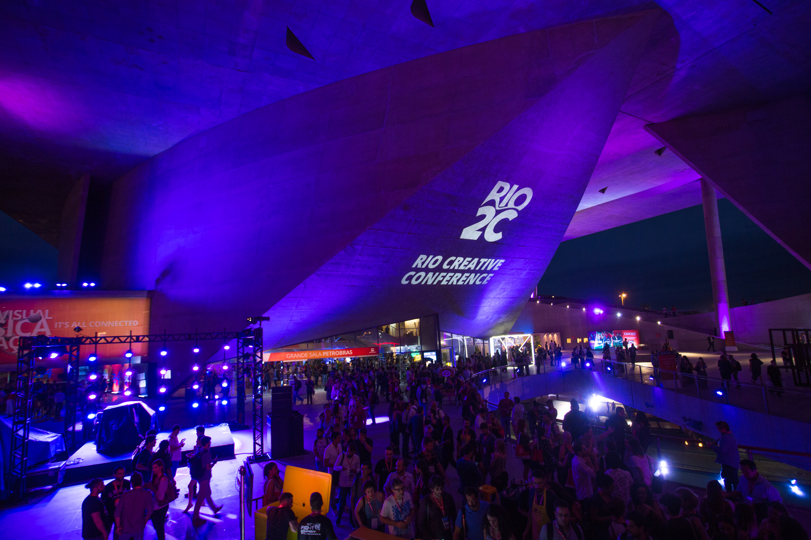
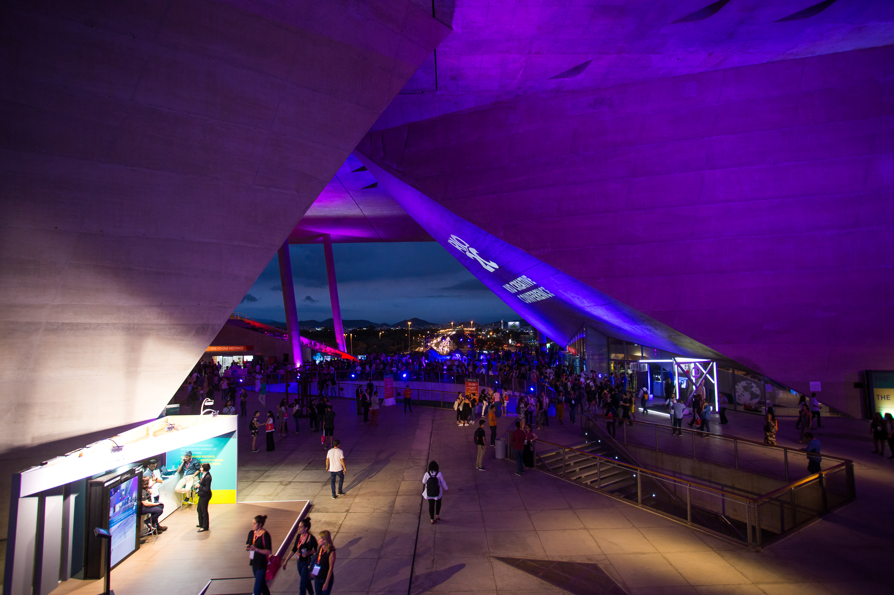
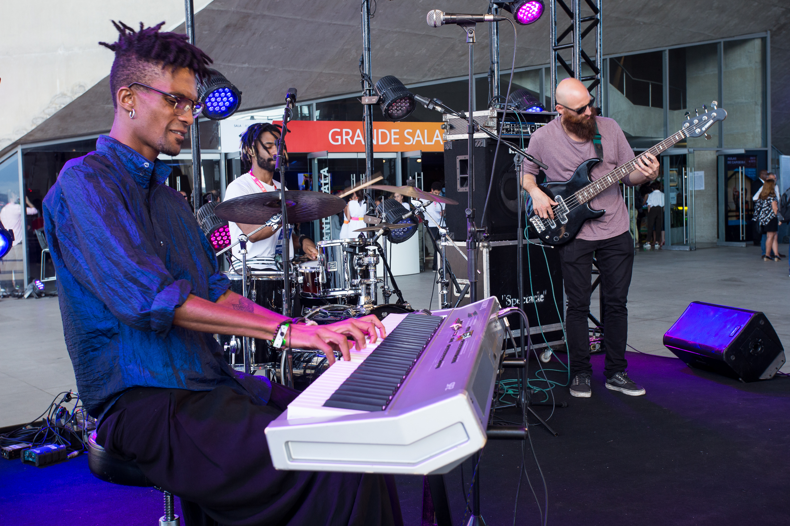
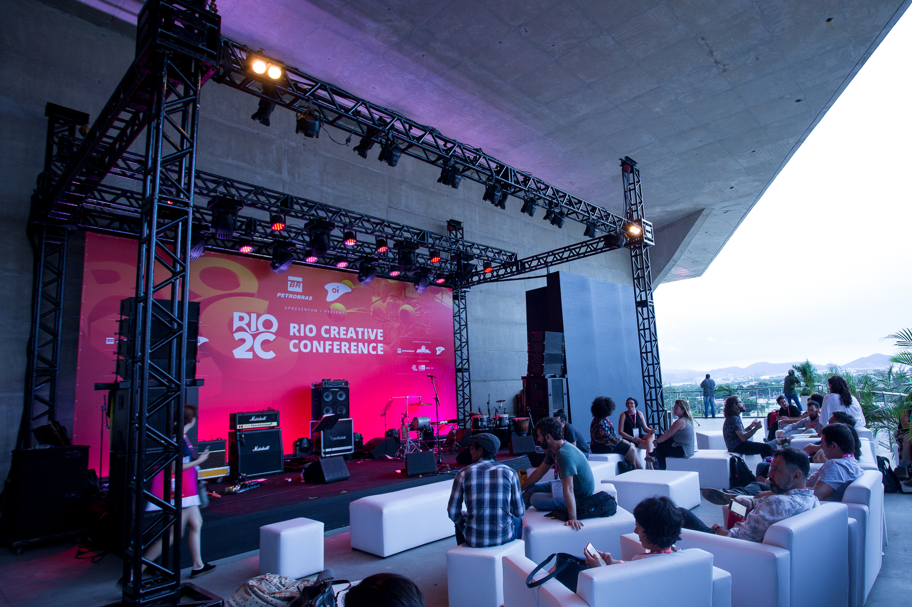
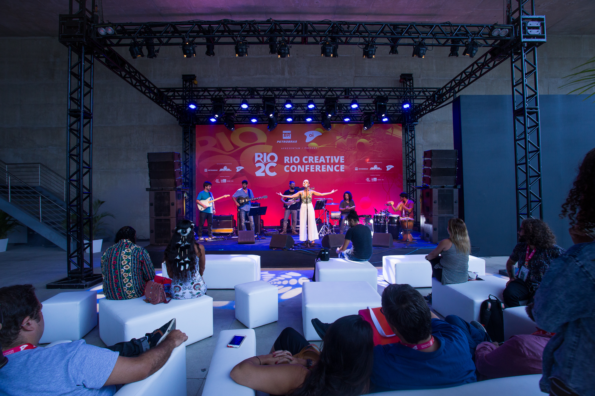
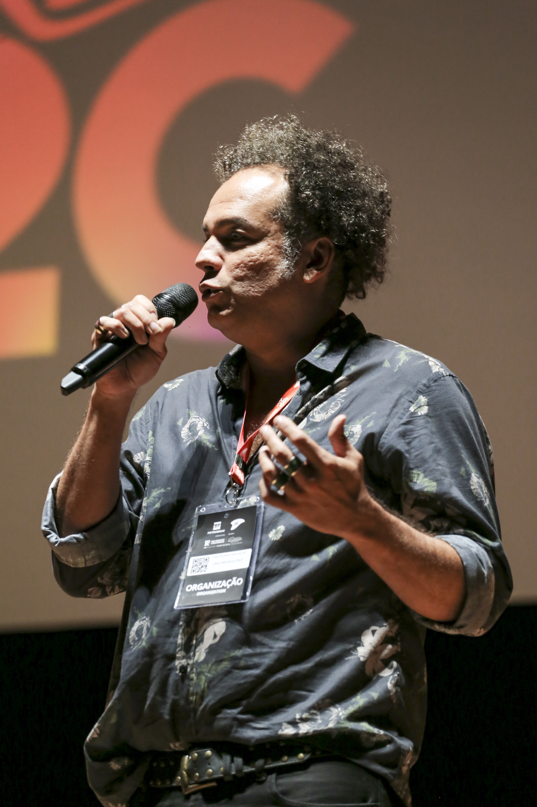

Rio 2C
Rio2C é o maior evento de audiovisual, música e inovação da América Latina.O Rio2C é um festival de mentes criativas que se reúnem durante 6 dias para vivenciar uma mistura única de conteúdos, aprimorar o conhecimento, fazer networking e concretizar grandes e inovadores negócios.A convite do CEO do RIo2C Rafael Lazarini, Ze Ricardo criou todo o conceito para a parte musical do evento.Os painéis de música, um novo modelo de pitchig shows com a comissão da música e a Festivalia, reunindo festivais independentes de todo pais no evento, são os pilares da curadoria de música do evento.A produção artística da parte de música do Rio2C é feita pela diretora executiva da Leve, Fabiane Costa.









